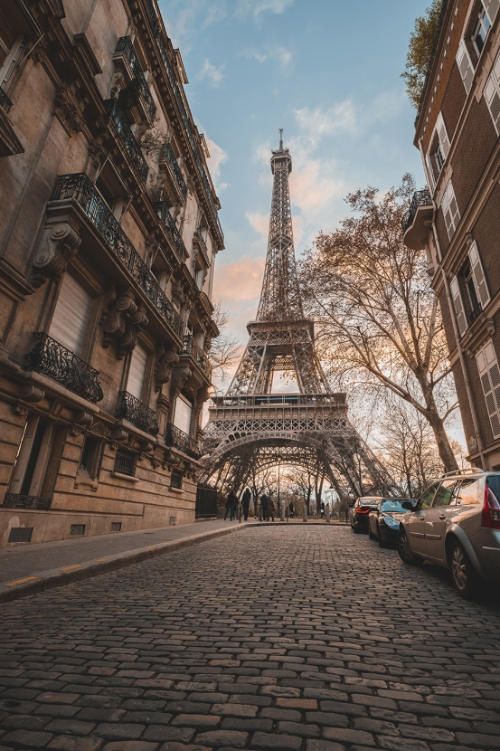

Париж вырос на месте поселения Лютеция, основанного кельтским племенем паризиев в III веке до н. э. Поселение располагалось на безопасном острове Сите, окружённом водами реки Сены. В начале II века до н. э. поселение было обнесено крепостной стеной. Основой экономики была торговля: Сена связывала Средиземное море с Британскими островами. В 52 году до н. э. паризии присоединились к восстанию галлов против господства Рима под предводительством арвернского вождя Верцинге́торига. В том же году состоялась битва при Лютеции, в которой римляне одержали победу. К этому времени относятся сочинения Юлия Цезаря «Записки о Галльской войне», в которых была впервые упомянута Лютеция — «город паризиев, расположенный на одном из островов Сены». После того, как римский полководец Тит Лабиен осадил её, жители разрушили мосты и сожгли город. Римляне возвели его заново, построив из камня дороги, виллы, 16-километровый акведук, три термы, амфитеатр и форум с базиликой. Римская администрация разместилась на острове Сите, где продолжал функционировать порт. В III веке город подвергся набегам со стороны германского племени алеманнов, что привело к переселению жителей с левого берега Сены на более защищённый остров Сите. Тогда же Лютеция стала называться Городом паризиев (лат. Civitas Parisiorum), а затем Паризием (лат. Parisium). В IV веке появилась первая христианская церковь. На V век пришлась деятельность Святой Женевьевы, ставшей покровительницей Парижа. В 470 году салические франки во главе с Хильдериком I более 10 лет осаждали город. В конце V века Хлодвиг на время превратил Париж в столицу Франкского государства. Средние века Основная статья: Средневековый Париж Осада Парижа викингами в 845 году (гравюра XIX века, размеры и качество каменных укреплений преувеличены в господствовавшем тогда стиле Виолле-ле-Дюка) В 508 году город стал столицей королевства Меровингов. В VI веке повсюду сооружались церкви и монастыри. В это время население составляло 15—20 тысяч жителей. На Сите возвышалась крепость, располагались резиденции короля и церковной власти. Основой существования города была торговля, а возможность выхода к морю (через Сену) способствовала появлению купцов с Востока — главным образом сирийских и еврейских. В VII веке Париж утратил столичную функцию после того, как король франков Хлотарь II переехал в Клиши, а позднее Карл Великий — в Ахен. После восшествия на трон первого короля Франции династии Капетингов Гуго Капета в конце X века вновь стал столицей государства. В конце IX века город подвергся набегам со стороны норманнов. В 856—857 годы они разорили левобережье Парижа. С 885 по 887 годы город осаждало не менее 40 тысяч норманнов на 700 судах. В начале XII века население было сосредоточено в основном на острове-крепости Сите, который оставался королевской резиденцией до середины XV века. Здесь же размещался епископский дворец и собор Парижской Богоматери. При церквях и монастырях действовали больницы для бедных. В XII—XIII веках происходило активное заселение правобережья, рядом с портом. При короле Филиппе II Августе была выстроена новая крепостная стена на обоих берегах Сены, на улицах заново уложена брусчатка. В XIII веке в образованном веком ранее Парижском университете действовало четыре факультета: каноническое право и теология, медицина, искусство, филология. Во время Столетней войны, с декабря 1420 года на протяжении 16 лет Париж был занят войсками английского короля Генриха V, а позднее герцога Бедфорда, регента Франции с 1422 года. С середины XV до середины XVI веков столица Франции располагалась в Туре.
